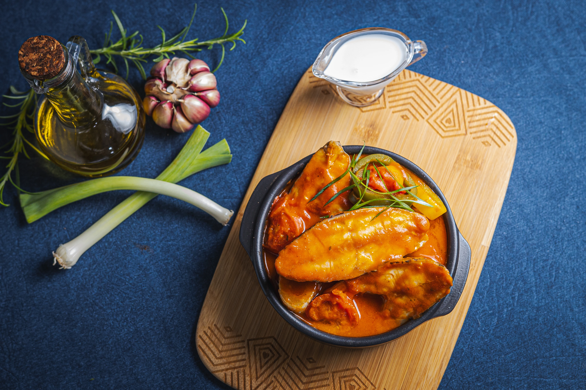

NOSSAS
RECEITAS
Filtros:
Categoria
Porção
Tempo de Prep.
Produto

1. FILÉ DE TILÁPIA GRELHADO COM LIMÃO E ALCAPARRAS
20 minutos
2. TILÁPIA AO MOLHO DE MARACUJÁ
30 minutos
3. TILÁPIA À PARMEGIANA
40 minutos
4. TACOS DE TILÁPIA
25 minutos
5. TILÁPIA EMPANADA COM MOLHO TÁRTARO
25 minutos
6. TILÁPIA AO LEITE DE COCO
35 minutos
7. TILÁPIA AO FORNO COM BATATAS
40 minutos
8. TILÁPIA COM MOLHO DE MOSTARDA E MEL
25 minutos
9. TILÁPIA AO ALHO E AZEITE
20 minutos
10. TILÁPIA COM ESPAGUETE AO ALHO E ÓLEO
30 minutos
11. BURGER DE TILÁPIA EMPANADA
25 minutos
12. TILÁPIA EMPANADA COM PURÊ DE BATATA
35 minutos
13. TILÁPIA EMPANADA COM ARROZ CREMOSO
30 minutos
14. TILÁPIA EMPANADA COM MOLHO AGRIDOCE
25 minutos
15. TILÁPIA EMPANADA COM SALADA TROPICAL
20 minutos
← Anterior
1
2
3
...
10
11
Próxima →